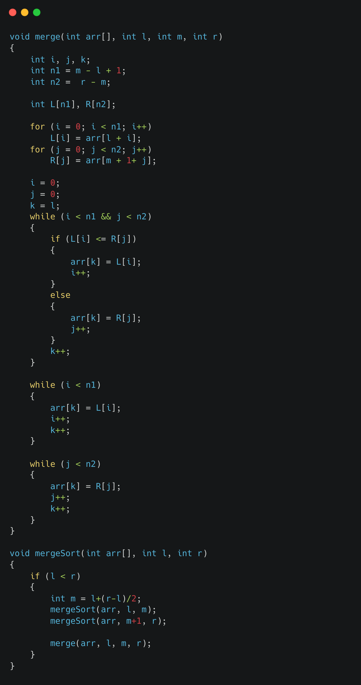

Merge sort is a sorting algorithm that uses the divide-and-conquer strategy to sort an array. The basic idea behind this algorithm is to divide the array into two smaller arrays, sort them separately, and then merge them back together in a sorted order.
The merge sort algorithm can be implemented in C using the following steps:
Here is an example implementation of the merge sort function in C:
The mergeSort function takes in 3 parameters: an array "arr", left index "l" and right index "r" and it will sort the array between these indexes. The merge function takes the same parameters, it takes the array and the two indexes, left and right and will merge the array between these indexes. This way we can recursively divide the array into smaller parts using mergeSort function and merge them back together using merge function.